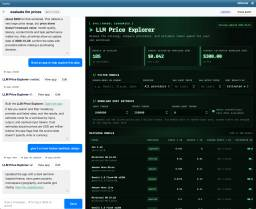

Simon Willison's Weblog
フィード

Quoting Nilay Patel
Simon Willison's Weblog
<blockquote cite="https://www.youtube.com/watch?v=-U4thshDTL8&t=422s"><p>The products aren't good enough to sell people on the costs.</p><p>You cannot tell people that you have to listen to the whine of a data center in their backyard for AI overviews and some of the most hilarious deep fake slop in history.</p><p>It's not worth it. It just isn't worth it to anyone. And agents aren't real and they might not be being used the way that anyone wants them to yet. All these companies are spending more than they're making on these products. Refrigerators holding blood storage in Europe are being hacked.</p><p>The costs are too high. The benefits are not real. And if you connect that to corruption, you're like, in order to impose these costs on me, these CEOs are in the White House shaking Trump's hand, renaming it to the Gulf of America, paying for this ballroom that we don't want. It's obvious crypto-corruption, and it's still slop. </p><p>The AI industry will not get out of it until t
21時間前
Quoting Paul Ford
Simon Willison's Weblog
<blockquote cite="https://ftrain.com/aboard-the-web-is-more-than-enough"><p>The web browser is very, very, very powerful software for applications, <em>and the cost of accessing that power is going down seemingly every day</em>.</p></blockquote><p class="cite">— <a href="https://ftrain.com/aboard-the-web-is-more-than-enough">Paul Ford</a>, The Web Is More Than Enough</p> <p>Tags: <a href="https://simonwillison.net/tags/browsers">browsers</a>, <a href="https://simonwillison.net/tags/paul-ford">paul-ford</a>, <a href="https://simonwillison.net/tags/web-development">web-development</a></p>
2日前
datasette-llm 0.1a10
Simon Willison's Weblog
<p><strong>Release:</strong> <a href="https://github.com/datasette/datasette-llm/releases/tag/0.1a10">datasette-llm 0.1a10</a></p> <p>Fixes a <a href="https://github.com/datasette/datasette-llm/pull/11">bug</a> that affected my <a href="https://agent.datasette.io/">agent.datasette.io</a> demo site, where the set of available LLM models was not correctly restricted to just those in the configuration.</p> <p>Tags: <a href="https://simonwillison.net/tags/datasette">datasette</a>, <a href="https://simonwillison.net/tags/llm">llm</a></p>
3日前
datasette-apps 0.3a0
Simon Willison's Weblog
<p><strong>Release:</strong> <a href="https://github.com/datasette/datasette-apps/releases/tag/0.3a0">datasette-apps 0.3a0</a></p> <p>Datasette Apps adds support for hosting and editing custom HTML applications inside of Datasette.</p><p>These can be created by hand, but it's easier to create them using LLMs via <a href="https://agent.datasette.io/">Datasette Agent</a>. This release improves that integration:</p><blockquote><ul><li>Apps can now be tagged in Datasette Agent chat messages by typing <code>#</code>, which autocompletes from the apps the user has permission to view.</li><li>New <code>app_add_stored_queries()</code> and <code>app_remove_stored_queries()</code> tools let the agent manage which stored queries an app is allowed to call. Granting a write query requires approval from the user first.</li><li><code>app_create()</code> now checks that each requested stored query exists and that the user can view it, and asks the user to approve any write queries before the app is c
4日前

datasette-agent 0.5a0
Simon Willison's Weblog
<p><strong>Release:</strong> <a href="https://github.com/datasette/datasette-agent/releases/tag/0.5a0">datasette-agent 0.5a0</a></p> <p>This is a significant release of <a href="https://agent.datasette.io/">Datasette Agent</a>. The most notable new feature is called the <strong>panel</strong> - it lets the agent chat open and then sit next to pages from Datasette, for example a table or query page.</p><p>When combined with <a href="https://github.com/datasette/datasette-apps">datasette-apps</a> this means you can prompt a database-backed app into existence and then modify it from the chat that sits next to that app.</p><p><img alt="Screenshot of a split-screen chat interface titled "evaluate llm prices" (model tag "gpt-6-luna"): the conversation runs in a narrow column on the left, and a wide side panel on the right displays the app the assistant built, with "EXPORT" and "Close panel" buttons above it. In the chat, blue user bubbles read "B
4日前
llm 0.37.1
Simon Willison's Weblog
<p><strong>Release:</strong> <a href="https://github.com/simonw/llm/releases/tag/0.37.1">llm 0.37.1</a></p> <p>A bugfix release for <a href="https://llm.datasette.io/">LLM</a>, with contributions from <a href="https://github.com/remote-controlled-man">Steven Huang</a>, <a href="https://github.com/tao-hpu">Tao An</a>, <a href="https://github.com/ar-jan">Arjan Mossel</a>, and <a href="https://github.com/XXXXXQ-0206">XQ</a>.</p> <p>Tags: <a href="https://simonwillison.net/tags/llm">llm</a></p>
4日前
Qwen 3.8 27B on my laptop can interpret model weights, too 2
2
Simon Willison's Weblog
<p>Yesterday's hot paper was <a href="https://rikiyat.github.io/blog/weight-space-programming/">Sparks of Weight-Space Programming: LLMs can natively read & write neural network weights</a> by Rikiya Takehi, Jayden Teoh, Alex Zhang, and Omar Khattab. The paper (OK, the authors classify is as a "blog post", but it's paper-shaped) found that frontier models, in particular GPT-6 Astra, can both interpret and modify the raw weights of a machine learning model - literally a text description of the model containing a bunch of floating point numbers. I've been playing with one of the examples from the paper and I'm delighted to share that Qwen 3.8 27B running on my laptop can do this as well!</p><h4 id="weight-space-programming">Weight-Space Programming</h4><p>Here's the highlight from their abstract, describing impressive capabilities for GPT-6 Astra and coining the term <strong>Weight-Space Programming</strong> for when LLMs analyze and modify model weights:</p><blockquote><p>Just by l
4日前
I discovered a sound that leaks your exact location (and it's everywhere) - YouTube
Simon Willison's Weblog
<p><strong><a href="https://www.youtube.com/watch?v=UytYrhYLOKI">I discovered a sound that leaks your exact location (and it's everywhere) - YouTube</a></strong></p>Genius piece of OSINT by Colsto, who demonstrates how you can take almost imperceptible background noise of planes from a video soundtrack, figure out their Doppler curves, then cross reference them against ADS-B data to find the exact location of the video based on their speed, distance, and gaps between different flights.</p><p><lite-youtube videoid="UytYrhYLOKI" js-api="js-api" title="I discovered a sound that leaks your exact location (and it's everywhere)" playlabel="Play: I discovered a sound that leaks your exact location (and it's everywhere)"> </lite-youtube> <p><small></small>Via <a href="https://lobste.rs/s/s1btqo/this_background_sound_leaks_your_exact">Lobste.rs</a></small></p> <p>Tags: <a href="https://simonwillison.net/tags/privacy">privacy</a>, <a href="https://simonwillison.net/tags/youtube">youtube</a
4日前
October sponsors-only newsletter
Simon Willison's Weblog
<p>I sent out the October edition of my <a href="https://github.com/sponsors/simonw/">sponsors-only monthly newsletter</a>. If you are a sponsor (or start a sponsorship now) you can <a href="https://github.com/simonw-private/monthly/blob/main/2026-10-october.md">access it here</a>. This month:</p><ul><li>The October inflection point for vibe game development</li><li>The vulnerability apocalypse gets hot</li><li>LLM releases</li><li>API credits for $100+/month subscriptions</li><li>What I'm using right now</li><li>My software releases</li></ul><p>My September newsletter <a href="https://simonwillison.net/newsletters/monthly-2026-09-september/">can now be seen here</a>, as a preview of what you'll get. Pay $10/month to stay a month ahead of the free copy!</p> <p>Tags: <a href="https://simonwillison.net/tags/newsletter">newsletter</a></p>
4日前
llm 0.37
Simon Willison's Weblog
<p><strong>Release:</strong> <a href="https://github.com/simonw/llm/releases/tag/0.37">llm 0.37</a></p> <p>There's a <em>lot</em> of stuff in this new release of my LLM CLI tool and Python library, representing around two months of accumulated features and fixes.</p><p>I added <code>gpt-6.1-sol</code> and <code>gpt-6.1-terra</code>, plus a new <a href="https://llm.datasette.io/en/stable/other-models.html#configure-an-openai-compatible-model">llm openai endpoint add</a> command to make it easier to configure additional models that use OpenAI-compatible endpoints.</p><p>I switched the default model (if you have not set your own default) to <code>gpt-6-luna</code> - half the price of the previous default, <code>gpt-5.6-luna</code>.</p><p>LLM's support for embeddings now accepts that different binary content may have different content-type - necessary for models like <a href="https://deepmind.google/models/gemini/embedding/">Gemini Embedding 2</a>, which can embed text, audio, images, and
5日前

The U.S. Census Bureau and “Super Intelligence”
Simon Willison's Weblog
<p>I was reminded today of <a href="https://www.apolloacademy.com/ai-adoption-rate-trending-down-for-large-companies/">AI Adoption Rate Trending Down for Large Companies</a>, a chart produced by Apollo Global Management in September 2025, which appeared to show a slowdown in U.S. corporate AI adoption based on numbers collected by the U.S. Census Bureau. At the time I used that chart <a href="https://simonwillison.net/2025/Sep/9/apollo-ai-adoption/">to demonstrate GPT-5 data analysis</a>, and then <a href="https://simonwillison.net/2025/Sep/9/claude-code-interpreter/#something-much-harder-recreating-the-ai-adoption-chart">to experiment with Claude's new Code Interpreter</a>. I decided to try running those numbers again to see what had changed over the past year, and in doing so learned that the Bureau has fallen foul of <a href="https://www.whitehouse.gov/presidential-actions/2026/09/inaugurating-the-era-of-super-intelligence/">Executive Order 14434</a>, aka the asinine Super Intellig
5日前
If in doubt, delete the uv.lock file
Simon Willison's Weblog
<p>I've been getting the occasional confusing Python dependency error since switching over to Python 3.15 and the rule I'm having to remember is:</p><p><strong>If in doubt, delete the uv.lock file</strong></p><p>Most of my projects are libraries which don't include a <code>uv.lock</code> file, since it's rude for a library dependency to lock versions for anything else that uses it.</p><p>Running <code>uv run pytest</code> etc tends to leave <code>uv.lock</code> files lying around, which are listed in <code>.gitignore</code> and so do not get committed to my repositories.</p><p>But... sometimes that <code>uv.lock</code> pins a version of a dependency that doesn't yet have a Python 3.15 wheel. An example from earlier today:</p><pre><code>error: Failed to build `watchfiles==1.1.1` cause: Call to `maturin.build_wheel` failederror: the configured Python interpreter version (3.15) is newerthan PyO3's maximum supported version (3.14)</code></pre><p>Deleting that file and running <code>uv run
6日前
Quoting Kyle Kingsbury
Simon Willison's Weblog
<blockquote cite="https://jepsen.io/analyses/particledb-1.1.4#llm-tradeoffs"><p>More broadly, the use of LLMs erodes trust in documentation, in software, and in the organizations which produce them. Perhaps engineers will begin to treat any new software project with suspicion—the signals we used to rely on as markers of a mature system are now easier to counterfeit. [...]</p><p>In the age of LLMs, what can maintainers do to ensure correct software and accurate documentation? Having done that work, how can they demonstrate its quality to users?</p></blockquote><p class="cite">— <a href="https://jepsen.io/analyses/particledb-1.1.4#llm-tradeoffs">Kyle Kingsbury</a>, Jepsen results for ParticleDB 1.1.4</p> <p>Tags: <a href="https://simonwillison.net/tags/kyle-kingsbury">kyle-kingsbury</a>, <a href="https://simonwillison.net/tags/llms">llms</a>, <a href="https://simonwillison.net/tags/ai">ai</a>, <a href="https://simonwillison.net/tags/generative-ai">generative-ai</a>, <a href="https
6日前
How We Took Over ChatGPT Accounts
Simon Willison's Weblog
<p><strong><a href="https://www.parameter.ai/labs/we-found-a-gap-at-openai">How We Took Over ChatGPT Accounts</a></strong></p>Parameter Labs describe an exploit they found against ChatGPT's implementation of the artifacts pattern (OpenAI used to call this "Canvas" but it looks like the latest revision is called <a href="https://help.openai.com/en/articles/20001246-working-with-writing-blocks-and-code-blocks-in-chatgpt">HTML previews</a>), where interactive custom HTML apps are displayed in a sandboxed iframe.</p><p>It's important that HTML in these stays tightly sandboxed to avoid untrusted code interacting with OpenAI APIs and accessing private data.</p><p>Parameter found quite a complex attack chain. OpenAI use the MathLive JavaScript library as part of their graph support, and that library includes <a href="https://mathlive.io/mathfield/virtual-keyboard/">its own virtual keyboard</a>, which can be triggered in the parent page via <code>postMessage()</code> from the sandboxed iframe
7日前
datasette-llm 0.1a9
Simon Willison's Weblog
<p><strong>Release:</strong> <a href="https://github.com/datasette/datasette-llm/releases/tag/0.1a9">datasette-llm 0.1a9</a></p> <p>I have some big upgrades to <a href="https://agent.datasette.io/">Datasette Agent</a> in the pipeline, but in the meantime here's a tiny user experience improvement to the underlying <code>datasette-llm</code> plugin. </p><p>It now picks up the default model used by <a href="https://llm.datasette.io/">LLM</a>, which means you can start using Datasette Agent without needing to explicitly configure a default model:</p><pre><code>uvx --with datasette-agent datasette content.db --internal internal.db</code></pre><p>Previously you would also need to specify a model with <code>-s plugins.datasette-agent.default_model gpt-6-astra</code>.</p> <p>Tags: <a href="https://simonwillison.net/tags/datasette">datasette</a>, <a href="https://simonwillison.net/tags/llm">llm</a>, <a href="https://simonwillison.net/tags/datasette-agent">datasette-agent</a></p>
7日前
dbreunig/nesformer
Simon Willison's Weblog
<p><strong><a href="https://github.com/dbreunig/nesformer">dbreunig/nesformer</a></strong></p>Inspired by <a href="https://divagr.com/blog/qwenputer">qwenputer</a> by Divyansh Agrawal, Drew Breunig baked a working emulator for a Nintendo Entertainment System 6502 CPU into the weights of Qwen3.5-4B. You can now play NES ROMs such as Super Mario Bros (very slowly) running inside Qwen!</p><p>In <a href="https://news.ycombinator.com/item?id=50306442#50307402">a comment on Hacker News</a> Drew reveals the Opus 5.5 prompts he used to build this system:</p><blockquote><p><code>Read this article and any relevant source code: https://divagr.com/blog/qwenputer. Then explore if you could emulate the chip and ram in a Nintendo Entertainment System (as people do today with FPGAs in MISTRs) using this technique. If so, what size model would you have to build and if you could use smaller faster ones, could you get it to be at the standard clockspeed.</code></p></blockquote><p>Followed by:</p><blockq
8日前
API credits benefit for eligible ChatGPT subscriptions
Simon Willison's Weblog
<p><strong><a href="https://help.openai.com/en/articles/20001626-api-credits-benefit-for-eligible-chatgpt-subscriptions">API credits benefit for eligible ChatGPT subscriptions</a></strong></p>Earlier this month Anthropic <a href="https://simonwillison.net/2026/Oct/7/claude-haiku-5-5/#api-credits">announced a generous new benefit</a> for their Max and Team subscriptions: $100, $200, and $500 per month subscribers would get the equivalent quantity of (expiring) credits to use with the Anthropic API.</p><p>OpenAI have now launched pretty much exactly the same deal: if you have a $100, $200, or $500 subscription plan with them you now get that same quantity of credits to apply to one of your API organizations.</p><p>I maintain subscriptions with both companies, so this is great news for me! I may even ship some public-facing demos now that the credits are already covered by my existing subscriptions. <p>Tags: <a href="https://simonwillison.net/tags/ai">ai</a>, <a href="https://simonwillis
9日前
Building a multiplayer game world with autonomous Fable-class models
Simon Willison's Weblog
<p><strong><a href="https://twitter.com/jsnnsa/status/2115623382721126826">How I Built the Most AI-Pilled Company in the World</a></strong></p>Don't be put off by the clickbait headline, this piece by Jacob Sansbury describing how they are building <a href="https://spawn.co">Spawn</a> is a fascinating exploration of the bleeding edge of what's possible with agentic engineering against frontier models.</p><p>Spawn is a massively multiplayer gaming environment where players can use prompts (to the in-game agent, Savi) to modify the game world.</p><p>I fired it up on my phone for a few minutes and was able to prompt a castle into existence, then a dragon, then ride the dragon to fly around that castle.</p><p><img alt="Two mobile screenshots side by side from a 3D voxel-style game. Left: a first-person view from the saddle of a small teal dragon, its neck with pale diamond markings and two curved white horns in the foreground, flying toward a dark stone castle with tall teal-gray conical
9日前
Quoting Ben Hylak
Simon Willison's Weblog
<blockquote cite="https://twitter.com/benhylak/status/2115172657910120740"><p>every product i use should just be a headless mcp, that feeds into an agent, where i never have to think about anything underneath.</p><p>except for our product, of course. </p><p>in our product, customers love the ui and love us very much.</p><p>we're special that way.</p></blockquote><p class="cite">— <a href="https://twitter.com/benhylak/status/2115172657910120740">Ben Hylak</a></p> <p>Tags: <a href="https://simonwillison.net/tags/model-context-protocol">model-context-protocol</a>, <a href="https://simonwillison.net/tags/ai">ai</a></p>
9日前
Quoting Ted Sanders
Simon Willison's Weblog
<blockquote cite="https://news.ycombinator.com/item?id=50248124#50249160"><p>In general, LLM performance is incredibly multidimensional. There's no guarantee of a fixed ordering where the model that is best at math is also the model that's best at jokes. Despite that complexity, much of the variation in performance is explained by just a single variable: model size. In general, models that are bigger will (a) be more performant / reliable, (b) cost more per token, and (c) have better recall of esoteric facts. As you note, our models are ordered:</p><p>Luna < Terra < Sol < Astra</p><p>[<a href="https://news.ycombinator.com/item?id=50248124#50250804">...</a>] These days, version number signifies a few things at once: the order of release, the relationship to other releases, and the magnitude of improvement. So something like 6.1 would indicate it was launched after 5.6, may share some similarities to other 6.1 models in terms of training data / personality (which is why it's no
10日前
GitHub Octoverse 2026
Simon Willison's Weblog
<p><strong><a href="https://github.blog/news-insights/octoverse/octoverse-commits-pushes-reach-new-highs-in-2026-as-developers-build-with-agents/">GitHub Octoverse 2026</a></strong></p>I'm at GitHub Universe today (GitHub gave me a free ticket through their "GitHub Stars" program). EVP Jay Parikh just announced this year's Octoverse report, and highlighted these numbers in particular:</p><p><img alt="Photo of a conference keynote stage: a wide curved screen shows three line charts side by side, with a speaker in a black sweater and dark jeans standing at its right edge beneath an overhead lighting rig. Each chart has a large colored headline number above it and a shaded line that runs low and nearly flat across the left side, then curves sharply upward on the right to end in a dot at its peak. Left, in green: "220M" "Merged PRs per month", y-axis 0M, 50M, 100M, 150M, 200M. Middle, in magenta: "7.38B" "Commits per month", y-axis 0B, 2B, 4B, 6B, w
10日前
The October inflection point for vibe game development
Simon Willison's Weblog
<p>I've written before about how November 2025 was <a href="https://simonwillison.net/tags/november-2025-inflection/">an inflection point for coding agents</a> - the point where Opus 4.5 and GPT-5.1 crossed a tipping point that meant their respective coding agents became reliable daily drivers for software engineers. I think we've reached a new inflection point in October 2026, and this time it's for <strong>vibe coding computer games</strong>.</p><ul> <li><a href="https://simonwillison.net/2026/Oct/28/vibe-game-development/#tree-appreciator">Tree Appreciator</a></li> <li><a href="https://simonwillison.net/2026/Oct/28/vibe-game-development/#emberwick">Emberwick</a></li> <li><a href="https://simonwillison.net/2026/Oct/28/vibe-game-development/#battle-drones">Battle Drones</a></li> <li><a href="https://simonwillison.net/2026/Oct/28/vibe-game-development/#pumpkin-farmer-aka-quarter-sun-cove">Pumpkin Farmer, aka Quarter Sun Cove</a></li> <li><a href="https://simonwillison.net/2026/Oct/28/
10日前
Quoting Terk Terkowitz
Simon Willison's Weblog
<blockquote cite="https://www.aboutamazon.com/news/company-news/amazon-software-engineer-role-guideline-ai"><p>If your work does not benefit from current AI tooling, that is a finding, not a failing. Document why, share it with your community of peers, bring it to your manager, and work to find solutions. An engineer who can explain where AI does not yet help their work is demonstrating the judgement we are asking for.</p></blockquote><p class="cite">— <a href="https://www.aboutamazon.com/news/company-news/amazon-software-engineer-role-guideline-ai">Terk Terkowitz</a>, An update from Amazon engineering leadership on the role of the developer in the age of AI</p> <p>Tags: <a href="https://simonwillison.net/tags/amazon">amazon</a>, <a href="https://simonwillison.net/tags/generative-ai">generative-ai</a>, <a href="https://simonwillison.net/tags/agentic-engineering">agentic-engineering</a>, <a href="https://simonwillison.net/tags/ai">ai</a>, <a href="https://simonwillison.net/tags/l
10日前
Game Boy Color on My Conference Badge
Simon Willison's Weblog
<p><strong><a href="https://spf13.com/p/game-boy-color-on-my-conference-badge/">Game Boy Color on My Conference Badge</a></strong></p>I'm at GitHub Universe this week and, <a href="https://simonwillison.net/2025/Oct/28/github-universe-badge/">similar to last year</a>, the conference badge is a full-blown color screen computer.</p><p>I've been hacking around with it again, and then I ran into with Steve Francia... who worked with Gemini to get a <a href="https://spf13.com/p/zelda-on-my-conference-badge/">full NES emulator</a> working on it, and then went a step further and deployed an emulator for both the Game Boy and the Game Boy Color.</p><p>Which means, if you can obtain the ROM, you can run <a href="https://en.wikipedia.org/wiki/The_Legend_of_Zelda:_Link%27s_Awakening">The Legend of Zelda: Link's Awakening</a> on your conference badge!</p><p><img alt="Photo of the badge running Zelda, in full color, with visible touch buttons below the screen." src="https://static.simonwillison.ne
11日前
GPT-6.1 Terra
Simon Willison's Weblog
<p><strong><a href="https://openai.com/index/introducing-gpt-6-1-terra/">GPT-6.1 Terra</a></strong></p>It's always interesting to note which aspects of a new model are emphasized in the release announcement.</p><p>In the case of GPT-6.1 Terra, OpenAI went with visual reasoning and computer use:</p><blockquote><p>We’re introducing <strong>GPT-6.1 Terra</strong>, a fast, efficient model that combines detailed visual reasoning and precise computer use alongside clearer, more natural writing. A significant step up from GPT‑5.6 Terra, it excels at the communication and computer-based tasks that fill the workday, from drafting proposals and interpreting technical drawings to filling out forms and editing videos.</p></blockquote><p>Terra sits in the same position as Sonnet in the Anthropic model collection - not the cheapest or the most expensive, making it harder to decide when to use it.</p><p>Computer use is a good example of a task that benefits from a less expensive model, since you mig
12日前
Quoting Jason Koebler
Simon Willison's Weblog
<blockquote cite="https://www.404media.co/chatgpt-keeps-telling-people-404-media-can-solve-their-tech-support-problems/"><p>Because big tech platforms essentially do not have customer support and make it impossible for their users to contact a human, many people experiencing run-of-the-mill tech problems have turned to ChatGPT. And, increasingly, ChatGPT is telling people that have normal tech support problems that they have discovered something journalistically notable and that 404 Media, specifically, can help them.</p></blockquote><p class="cite">— <a href="https://www.404media.co/chatgpt-keeps-telling-people-404-media-can-solve-their-tech-support-problems/">Jason Koebler</a>, ChatGPT Keeps Telling People 404 Media Can Solve Their Tech Support Problems</p> <p>Tags: <a href="https://simonwillison.net/tags/jason-koebler">jason-koebler</a>, <a href="https://simonwillison.net/tags/openai">openai</a>, <a href="https://simonwillison.net/tags/journalism">journalism</a>, <a href="htt
12日前
webframe: evaluated as a scraper and a sandbox
Simon Willison's Weblog
<p><strong>Research:</strong> <a href="https://github.com/simonw/research/tree/main/webframe-evaluation#readme">webframe: evaluated as a scraper and a sandbox</a></p> <p><a href="https://github.com/tractordev/webframe">webframe</a> is a neat little project from Jeff Lindsay which lets you "run a web page like a program" - you point it at a URL or file and it executes it in a hidden headless web view and outputs <code>console.log()</code> to standard output and any exceptions to standard error.</p><p>It's written in Go on top of the <a href="https://github.com/crgimenes/glaze">glaze</a> library, which provides access to a system browser ("WKWebView on macOS, WebKitGTK on Linux, WebView2 on Windows") so it doesn't need to bundle its own browser engine.</p><p>It reminds me of my own <a href="https://shot-scraper.datasette.io/en/stable/javascript.html">shot-scraper javascript</a> tool, albeit in a much smaller package that doesn't depend on Playwright.</p><p>I had Claude Opus 5.5 <a href=
12日前
Seam Cutter
Simon Willison's Weblog
<p><strong>Tool:</strong> <a href="https://tools.simonwillison.net/seam-cutter">Seam Cutter</a></p> <p>I built this weird and very specific cropping tool - it lets you create a horizontal or vertical cut across an image, then slide the two sides relative to each other. Effectively it lets you crop out a section in the middle of an image.</p><p>I wanted this because I often use <a href="https://apps.apple.com/us/app/tailor-screenshot-stitching/id926653095">Tailor</a> on my iPhone to stitch several screenshots together into lot long image, but sometimes I find myself wanting to crop out a section in the middle - to redact an irrelevant prompt from a transcript, for example.</p> <p>Tags: <a href="https://simonwillison.net/tags/tools">tools</a></p>
13日前
battledrones v14: Compass Rose, a four player map
Simon Willison's Weblog
<p><strong>Release:</strong> <a href="https://github.com/simonw/battledrones/releases/tag/v14">battledrones v14: Compass Rose, a four player map</a></p> <p>I added four player online mode to <a href="https://simonwillison.net/2026/Oct/20/battledrones/">Battledrones</a> - previous maps were limited to two.</p><p>Here's the initial prompt I used: </p><blockquote><p><code>Add a new map for a four player battle - four way rotational symmetry, up to four AI players, works with the WebSocket non-audio based multiplayer mode so up to four human players can join (any spare slots use AI)</code></p></blockquote><p>Claude Opus 5.5 added a new map called "Compass Rose" and modified the WebSockets multiplayer network code to support up to four players for that map, joining via share links or QR codes.</p><p><img alt="The new map does indeed look a bit like a rose - it uses the cold and ice biome. Also shown are purple robots battling on the map." src="https://raw.githubusercontent.com/simonw/battl
14日前
Quick Study
Simon Willison's Weblog
<p><strong>Tool:</strong> <a href="https://tools.simonwillison.net/quick-study-painter">Quick Study</a></p> <p>Prompt <a href="https://claude.ai/share/71adda96-193f-4f2a-97c0-454e08066afb">to Claude Opus 5.5 High</a>:</p><blockquote><p><code>Build an artifact where you open a photo and it rapidly (in a few seconds) paints a version of that photo using a canvas element and simulated paintbrush</code></p></blockquote><p>See also <a href="https://simonwillison.net/2026/Aug/25/pelican-watercolor/">my previous experiment</a> getting Claude Fable to simulate a watercolor illustration with P5.js.</p><p><img alt="A simulated oil painting of a photograph of a heron" src="https://static.simonwillison.net/static/2026/heron-oil.webp" /></p><p>Quick Study uses <a href="https://en.wikipedia.org/wiki/Sobel_operator">Sobel edge detection</a>, with no external libraries beyond Google Fonts.</p> <p>Tags: <a href="https://simonwillison.net/tags/tools">tools</a></p>
15日前